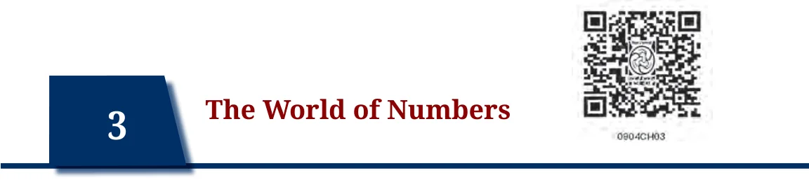
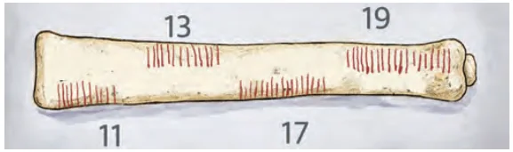

Long before humanity built cities, formulated laws, or studied the stars, there existed a fundamental, practical necessity: the need to keep count. Mathematics did not begin in a classroom with equations on a board; it began in the dirt, on the bark of trees, and on bones.
Imagine you are living thousands of years ago in a small agricultural settlement along the banks of the Saraswati river. You have a herd of cattle. Every morning, they go out into the dense forests to graze, and every evening, they return. How do you ensure that a calf has not wandered off? Without words for numbers, and without written symbols, early humans solved this through a concept called one-to-one correspondence.
For every cow that left the settlement, the herder might place one pebble in a clay pot. In the evening, for every cow that returned, one pebble was removed. If the pot was empty at the end of the day, the herd was safe. If pebbles remained, cows were missing. This simple act of matching one object to another was the birth of the Natural Numbers (\(\mathbb{N}\) = {1, 2, 3, 4, ... }).
3.1.1 A History Written in Bone
While the decimal place-value system we use today was perfected in the Indian subcontinent, the earliest physical evidence of humanity recording natural numbers takes us deep into the heart of Africa. The first mathematicians did not use paper; they used tally marks carved into bone.
The Lebombo Bone, discovered in the Lebombo Mountains between South Africa and Swaziland, dates back approximately 35,000 years. It is a bone featuring 29 distinct, deliberately-carved uniformly-sized notches. Anthropologists and mathematicians believe this was not just random scratching, but a tool used as a lunar phase counter or a menstrual calendar, indicating that early humans were tracking time through natural numbers.
Even more fascinating is the Ishango bone, found near the headwaters of the Nile River in the Democratic Republic of Congo, dating to around 20,000 BCE. This bone contains three columns of asymmetrical notches. What makes the Ishango bone a mathematical marvel is the specific grouping of the tallies. One of the columns groups notches into 11, 13, 17, and 19 — the prime numbers between 10 and 20. Another column seems to demonstrate the concept of multiplication by 2 (doubling). These artefacts indicate that the abstract concept of a ‘number’ is indeed tens of thousands of years old.

3.1.2 The Indian Context: Trade and Astronomy
As civilisations advanced, so did the need for larger numbers. In the ancient urban centers of the Indus Valley Civilisation, such as Lothal and Harappa, standardised weights and measures were crucial for trade. A merchant trading terracotta pottery, lapis lazuli, or cotton with Mesopotamia needed a robust system of accounting.
During Vedic times, Indian philosophers were fascinated by and deeply pondered large numbers. In the Vedas, which go back thousands of years, names were given to all powers of 10 up to \(10^{12}\) (which was called parārdha). In the Lalitavistara in the 4th century BCE, Buddha describes names up to \(10^{53}\), which is called tallakṣhaṇa.
Expressing quantities in terms of powers of 10 was explicitly used in the Ṛigveda, thus setting the stage for the number system based on powers of 10 to be developed in India in the ensuing years, and which we now use around the world today. The development of the Indian numeral system in terms of place values and powers of 10 also helped pave the way for what is perhaps the most important mathematical invention in human history: the concept of zero.